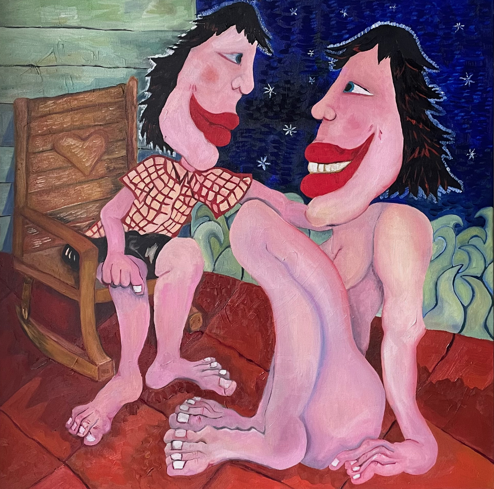
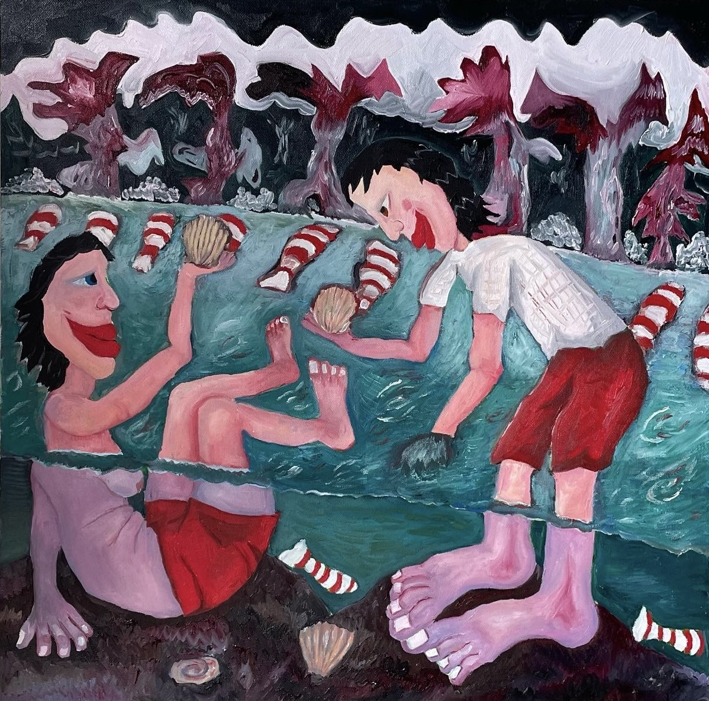
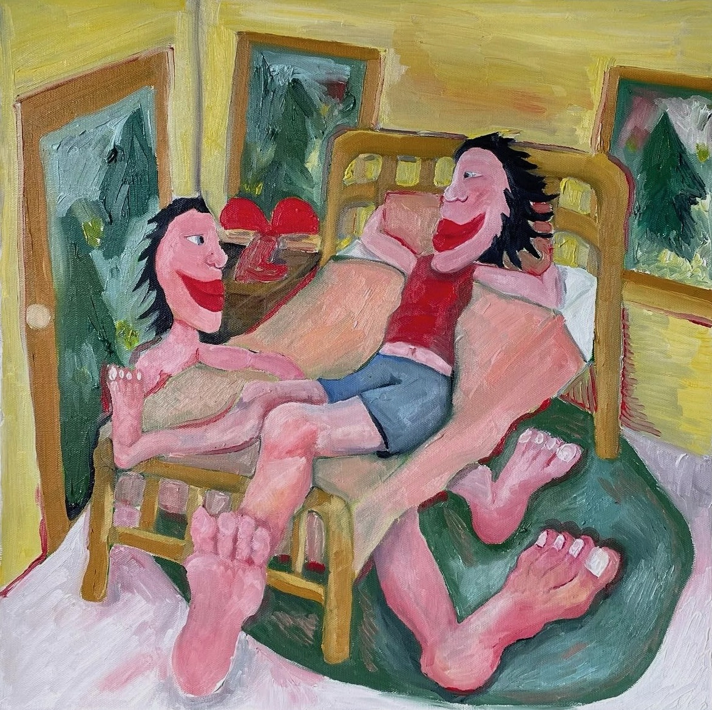

ABOUT
Colleen’s works are rooted in the themes of love, home, queerness, and connection, prompting contemplation of our present relationship with ourselves, others, the surrounding world, and the nature of reality itself.
Vimeo
Art
-
 Southern Nights Abstraction
Southern Nights Abstraction -

Porch Night
-

River Play
-

Lay Lady Lay
Bio
Finding solace in queer expressions of intimacy, Colleen explores reimagined patterns of connection through two central characters, setting, and self. Informed by an upbringing in Atlanta, Colleen’s work recontextualizes familiar southern experiences, sourcing inspiration from folk music, southern landscape, and ideas of love and home. Colleen aims to embody the auric experience of intimacy found in experiences with others and the surrounding environment. Abstraction and figural depictions of connection find balance in Colleen’s work using color, proportion, distance, and pattern. In congruence, ideas of presence and reflection are highlighted through the similarity of both of the figures, sharing interpretation of queer intimacy and a reflection of oneself.